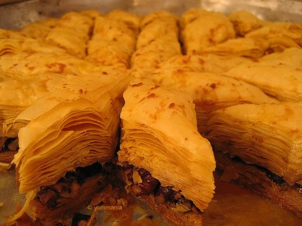

Pse esht e veqant Bakllava
Bakllava jo vetem pse esht e shishme po e ka edhe rendesin e vet. Pse? Bakllaven ne troje shqiptare perdoret edhe per dit te shejnta si shemull diten e shejnt te Bajramit, Festa, Festa te fundvitit. etj
Përbërësit:
- 5 ve – 1 e plotë dhe 4 të kuqtë
- 1 gotë vaj
- 1 gotë qumësht
- 1 lugë të mesme sheqer
- 1 maje thike kripë
- Rreth 500 gr miell/li>
- Rreth 400 gr arra të qëruara e të coptuara
Return to main page